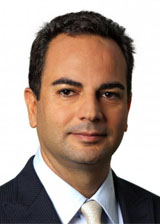
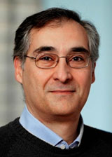
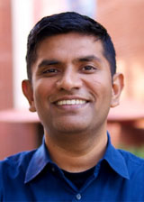
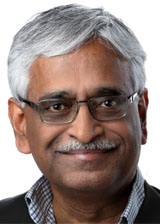
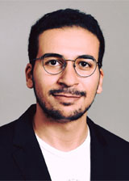
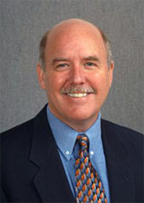

- Home
- Aims and scope
- Topics
- Organization
- Important dates
- Program
- Keynotes
- Invited Talks
- Panel
- Announcements
- Submission
- Scholarship Awards
- Links
Sponsors


Thirteenth International Workshop on
Real-Time Business Intelligence and Analytics
August 26, 2019 - Los Angeles, CA, USA
Panel
Internet of Things (IoT):
The future of Real-Time Business Intelligence and Analytics
Abstract
The BIRTE workshop has been focusing on the topic of Real-Time Business Intelligence and Analytics for the past 13 years, mainly covering technologies to enable data analysis and infer business intelligence from structured and semi-structured sources of data. With the new advent of sensor technologies and pervasiveness of IoT devices, more and more businesses collect their data from these new sources in the forms of signals, video and audio. Our database community has been a pioneer in managing and analyzing these unstructured datasets, representing them as timeseries, multidimensional, streaming and spatiotemporal data types. Hence, it only seems natural to broaden the scope of BIRTE to advocate our community's participation in the IoT market that according to Forbes will grow to about $520B in 2021.
In this panel we discuss different types of IoT datasets and applications, as well as IoT-relevant data management and analysis tools and techniques, and answer the question of whether IoT is only a new application for the old techniques or are there new data management and analytics research and thus a role for our community to play in this growing market.
Panel Moderator
Cyrus Shahabi (USC)
Cyrus Shahabi is a Professor of Computer Science, Electrical Engineering and Spatial Sciences; the chair of the Computer Science Department; and the director of the Integrated Media Systems Center (IMSC) at USC's Viterbi School of Engineering. He was co-founder of two USC spin-offs, Geosemble Technologies and Tallygo, which both were acquired, in July 2012 and March 2019, respectively. He received his B.S. in Computer Engineering from Sharif University of Technology in 1989 and then his M.S. and Ph.D. Degrees in Computer Science from the University of Southern California in May 1993 and August 1996, respectively. He authored two books and more than three hundred research papers in databases, GIS and multimedia with more than 12 US Patents. He was an Associate Editor of IEEE Transactions on Parallel and Distributed Systems (TPDS) from 2004 to 2009, IEEE Transactions on Knowledge and Data Engineering (TKDE) from 2010-2013 and VLDB Journal from 2009-2015. He is currently the chair of ACM SIGSPATIAL for the 2017-2020 term and also on the editorial board of the ACM Transactions on Spatial Algorithms and Systems (TSAS) and ACM Computers in Entertainment. He chaired the founding nomination committee of ACM SIGSPATIAL for its first term (2011-2014 term). He regularly serves on the program committee of major conferences such as VLDB, SIGMOD, IEEE ICDE, ACM SIGKDD, IEEE ICDM, and ACM Multimedia. Dr. Shahabi is a fellow of IEEE, and a recipient of the 2003 U.S. Presidential Early Career Awards for Scientists and Engineers (PECASE).
Panel Speakers
Gustavo Alonso (ETH Zurich)
Gustavo Alonso studied Telecommunications -electrical engineering- at the Madrid Technical University (ETSIT, Politecnica de Madrid). As a Fulbright scholar, he completed an M.S. and Ph.D. in Computer Science at UC Santa Barbara. After graduating from Santa Barbara, he worked at the IBM Almaden Research Center before joining ETH Zurich. At ETH, he is part of the Systems Group and the Head of the Institute of Computing Platforms. Gustavo is a Fellow of the ACM and of the IEEE as well as a Distinguished Alumnus of the Department of Computer Science of UC Santa Barbara. Gustavo's research interests encompass almost all aspects of systems, from design to run time. He works on distributed systems, databases, cloud computing, and hardware acceleration of data science. His recent research is related to multi-core architectures, large clusters, FPGAs, large scale data processing, cloud computing, and big data, mainly working on adapting traditional system software (OS, databases, networking) to modern hardware platforms.
Bhaskar Krishnamachari (USC)
Bhaskar Krishnamachari is Professor of Electrical and Computer Engineering at the Viterbi School of Engineering at the University of Southern California. He is Director of the USC Viterbi Center for Cyber-Physical Systems and the Internet of Things (CCI). He has expertise in designing algorithms and software for the internet of things, connected vehicles, distributed computing, machine learning, and blockchain technologies. He has co-authored more than 300 papers, and 2 textbooks, collectively cited more than 25000 times (per Google Scholar). He has been a co-recipient of several best paper awards including at ACM MobiCom and ACM/IEEE IPSN. He has received the NSF CAREER Award and the ASEE Terman Award for outstanding electrical and computer engineering educators. In 2011, he was listed in MIT technology review magazine’s TR-35 list of top 35 innovators under the age of 35, and in 2015 was named one of Popular Science magazine’s "Brilliant 10".
C. Mohan (IBM)
Dr. C. Mohan is currently an IBM Fellow at the IBM Almaden Research Center in Silicon Valley and a Distinguished Visiting Professor at Tsinghua University in China. He has been an IBM researcher for 37 years in the database and related areas, impacting numerous IBM and non-IBM products, the research and academic communities, and standards, especially with his invention of the well-known ARIES family of database locking and recovery algorithms, and the Presumed Abort distributed commit protocol. This IBM (1997), ACM (2002) and IEEE (2002) Fellow has also served as the IBM India Chief Scientist (2006-2009). In addition to receiving the ACM SIGMOD Edgar F. Codd Innovations Award (1996), the VLDB 10 Year Best Paper Award (1999) and numerous IBM awards, Mohan was elected to the US and Indian National Academies of Engineering (2009) and named an IBM Master Inventor (1997). This Distinguished Alumnus of IIT Madras (1977) received his PhD at the University of Texas at Austin (1981). He is an inventor of 50 patents. He is currently focused on Blockchain, Big Data and HTAP technologies (http://bit.ly/CMbcDB, http://bit.ly/CMgMDS). For over 2 years, he has been an evangelist for permissioned blockchains and the myth buster of permissionless blockchains. Since 2016, Mohan has been a Distinguished Visiting Professor of China’s prestigious Tsinghua University. He has served on the advisory board of IEEE Spectrum, and on numerous conference and journal boards. Mohan is a frequent speaker in North America, Europe and Asia, and has given talks in 40 countries. He is very active on social media and has a huge network of followers. More information can be found in the Wikipedia page at http://bit.ly/CMwIkP
Mohamed Sarwat (Arizona State University)
Mohamed Sarwat is an assistant professor of computer science and the director of the Data Systems (DataSys) lab at Arizona State University. Dr. Sarwat is a recipient of the 2019 National Science Foundation CAREER award and the 2014 University of Minnesota Doctoral Dissertation Fellowship. His general research interest lies in developing robust data systems that improve life in cities. The outcome of his research has been recognized by two best research paper awards in the IEEE International Conference on Mobile Data Management (MDM 2015) and the International Symposium on Spatial and Temporal Databases (SSTD 2011), a best of conference citation in the IEEE International Conference on Data Engineering (ICDE 2012) as well as a best vision paper award (3rd place) in SSTD 2017. Besides impact through scientific publications, Mohamed is also the co-architect of several software artifacts, which include GeoSpark (a scalable system for processing big geospatial data) that is being used by major tech companies such as Uber, Facebook and MoBike. Dr. Sarwat spent the summers of 2011 and 2012 at NEC laboratories and Microsoft Research Redmond, respectively. He is an associate editor for the GeoInformatica journal and has served as an organizer / reviewer / program committee member for major data management and spatial computing venues. In June 2019, Dr. Sarwat has been named an Early Career Distinguished Lecturer by the IEEE Mobile Data Management community.
David Schrader (Teradata)
Since retiring in 2014 as a Director of Database Advanced development and then as a director of Marketing at Teradata, a high-tech database company, "Dr Dave" has remained active on the Board of Directors for the Teradata University Network. In that role he creates materials for faculty and students to learn business analytics, data science, stats, and computer science. After he retired, he gave many Big Data talks, but in 2015 he added sports analytics to his repertoire. Those talks have become VERY popular. In the past 3 years, he has given 104 talks to students, faculty, and university staff members on sports and business analytics at 54 schools to more than 3600 people. In May 2018, he was the keynote speaker for the NCAA's first Data Summit, presenting to athletic directors. Since early 2017, he has focused on helping schools do "Moneyball on Campus" sports projects, connecting athletic departments with students and faculty who can do sports analytics projects on their own campus. Sample projects include building predictive models for fan attendance at the 12 schools in the Mountain West Conference, a project done with 6 Notre Dame students and 24 Air Force Academy cadets. Another project involved redoing how the NCAA assigns 105 schools to 6 regions on their way to the Division 3 National Wrestling Championships. This project was done with 5 schools: Bentley, Wright State, the University of Cincinnati, Purdue and Notre Dame. Right now he's focused on recruiting pipeline optimization, an area that would save significant time and money at most schools. He holds a Ph.D. in Computer Science from Purdue, and worked at 3 different high-tech database companies.